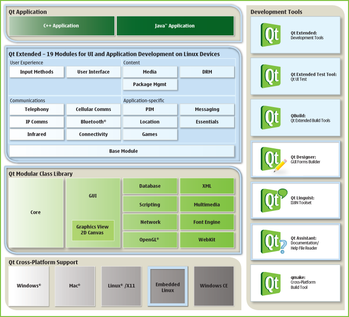

|
Home · All Namespaces · All Classes · Grouped Classes · Modules · Functions | |
[Previous: Qt Extended Modules] [Qt Extended Modules] [Next: Building modules]
A module is a selection of projects (also called components) which form a logical group based on a limited number of features to which they contribute. A module can contain libraries, plug-ins, applications and server components.
To ensure binary compatibility libraries have not been broken up into smaller parts than what was already possible in previous versions of Qt Extended. Therefore some libraries contain classes for which the actual backend implementation is part of another module. The most noteable examples are classes (such as QSoftMenuBar) in libqtopia which is part of the Base module (and therefore is part of all builds). The QSoftMenuBar backend is provided by QSoftMenuBarProvider which is part of the UI module. The underlying assumption is that if a device wouldn't require the UI module there would either not be a use for QSoftMenuBar or a new backend would be provided.
The content of each module is defined by a module_<name-of-module>.pri project file in <qt-extended-dir>/src. The class documentation has been extended to indicate a classes membership.
The smallest possible out-of-the-box configuration that can be created via the Qt Extended configure script looks like this:
$QPEDIR/configure -device xyz
The above command line assumes that the device xyz doesn't add any additional modules. If the -device parameter is left out the build system automatically selects the reference device profile (see <qt-extended-dir>/devices/reference) which enables almost every single module.
Such a base build only includes Qt and the Base module. It has a significantly reduced footprint compared to previous Qtopia platform builds. With the exception of the Help application it does not contain any applications and provides a basis for most embedded multiprocess solutions. Please note that even a base build can be further minimized if required.
As part of the modularization effort in Qt Extended 4.4 the server has been split up into several subprojects. This enables a more flexible configuration when it comes to selecting only necessary components. Each server subproject forms an independent component and can be defined and selected like any other type of project. Examples of such server subprojects and their inclusion into the various modules can be found in the module_<name-of-module>*.pri project selection files.
The Qt Extended build system builds each server component into a (static) library. During the final linking of the server binary all existing server component libraries are merged into one single binary. The most minimalistic Qt Extended server build must contain $QPEDIR/src/server/core_server and $QPEDIR/src/server/main.
The subsequent picture gives a visual summary of all modules. Note that although the Cell and IPComms are technically based on the Telephony module it is not required to select Telephony when selecting the Cell or IPComms module. The Qt Extended build system resolves those dependencies automatically and thus presents a simplified selection mechanism.

The Development Tools and QtUiTest module contribute towards the Qt Extended development environment (debugging and testing purposes) and wouldn't usually be part of the device image.
As mentioned earlier modules do not depend on each other. Each module can function independently. However the presence of one module can influence the content of another module. An example of such cross-dependency can be found in the Pim module which provides the Contacts application. If Qt Extended would be configured to use the Pim module only the Contact application would manage the user's list of contacts. However together with the Telephony module the Contacts application enables additional features such as the ability to directly dial a contact phone number. This is possible because the Dialer service is part of the Telephony module. If for instance the Bluetooth module were to be enabled the Contact application can transfer PIM entries to other devices via Bluetooth.
To facilitate the above mentioned selection process some components are members of several modules. An example would be libqtopiapim which is part of the Pim, Telephony, UI and Messaging module. The documentation for each class states to which module it belongs.
Each module contains a set of applications. This section presents a matrix of the most common Qt Extended applications and how they are sorted into the various modules:
| Application | Module | Application | Module |
|---|---|---|---|
| Appearance | UI | Messages (qtmail) | Messaging |
| Bluetooth applications | Bluetooth | MessageServer | Messaging |
| Calculator | Essentials | PackageManager | PkgManagement |
| Calendar | Pim | PhoneNetworks | Cell |
| CallForwarding | Cell | Phone simulator | Development Tools |
| Camera | Essentials | PhotoEdit | Essentials |
| Clock | Essentials | PIM Synchronization | Pim |
| Contacts | Pim | Powermanagement | Essentials |
| DRM browser | Drm | Qt Extended Server | Base |
| Games | Games | RingProfile | Telephony |
| GTalkSettings | IPComms | SecurityMonitor | PkgManagement |
| HelpBrowser | Base | SystemInformation | Essentials |
| HomeScreen | UI | SystemTime | Essentials |
| Infrared file transfer | Infrared | Tasks | Pim |
| Internet | Connectivity | TelepathyAgent | IPComms |
| Language | Essentials | Theme editior | Base |
| Logging | Development Tools | TextEdit | Essentials |
| Mediaplayer | Media | Value Space explorer | Development Tools |
| MediaRecorder | Pim | Words | InputMethods |
| MediaServer | Media | WorldTime | Essentials |
[Previous: Qt Extended Modules] [Qt Extended Modules] [Next: Building modules]
| Copyright © 2009 Trolltech | Trademarks | Qt Extended 4.4.3 |